Meet Wally
The approved whale, running in Unity. Ten finishes, eight temperament expressions and five local tap reactions. These are captures of the actual imported mesh and runtime materials.
Five random tap reactions
One tap picks a reaction without repeating the previous one. This review loops each action so you can compare them. In the app, drag still rotates and material-specific gestures stay available; Calm mode keeps the body still.
Breach jump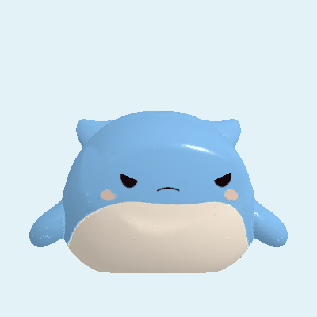
Tail splash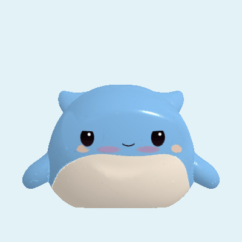
Flipper wave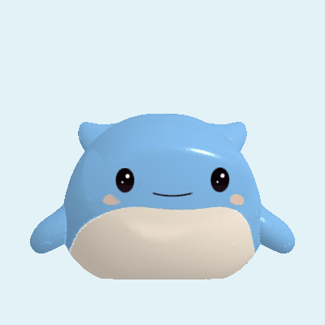
Curious rollSleepy bob Ten finishes
The cream belly stays Wally’s signature. Classic Blue preserves the approved source paint; Deep Sea Glow is the collection’s one special.
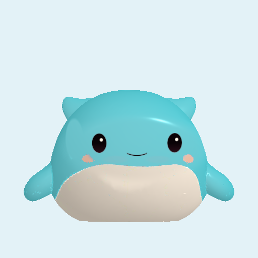
Lagoon Jellyclear-jelly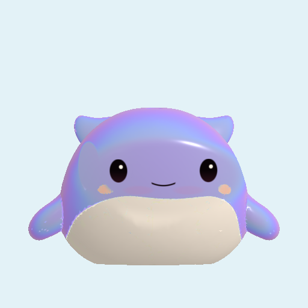
Moon Pearlpearl-jelly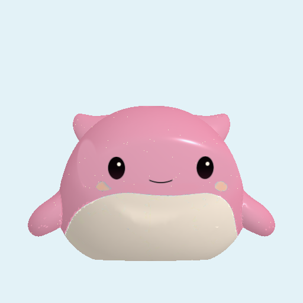
Coral Glitterconfetti-gel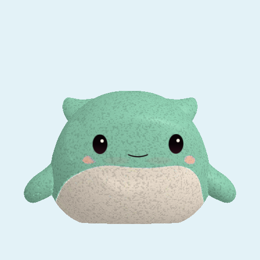
Seafoam Mochimochi-foam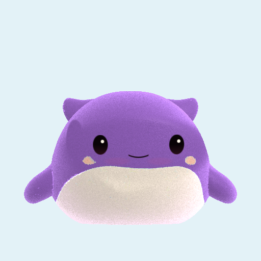
Lavender Flockvelvet-flock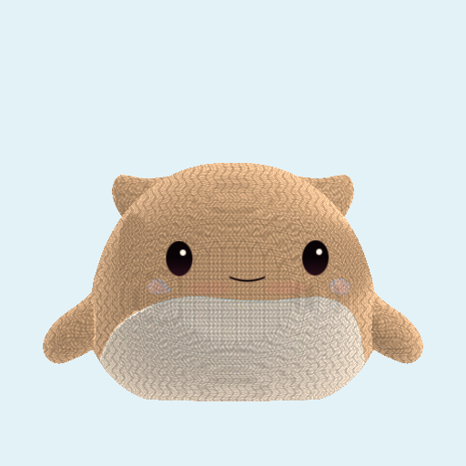
Cloud Plushboucle-plush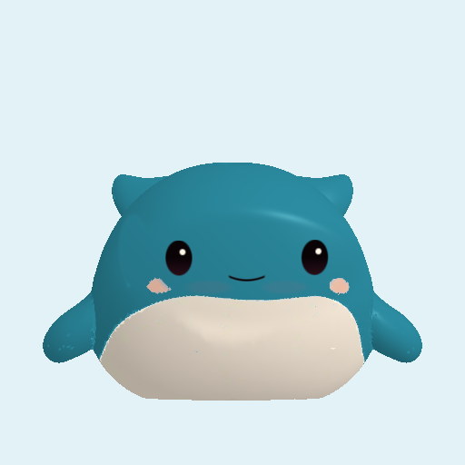
Reef Mattematte-vinyl Classic Bluegloss-vinyl
Classic Bluegloss-vinyl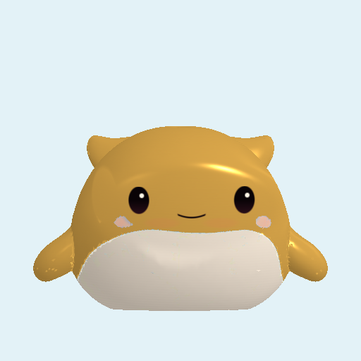
Sunken Goldcoated-metallic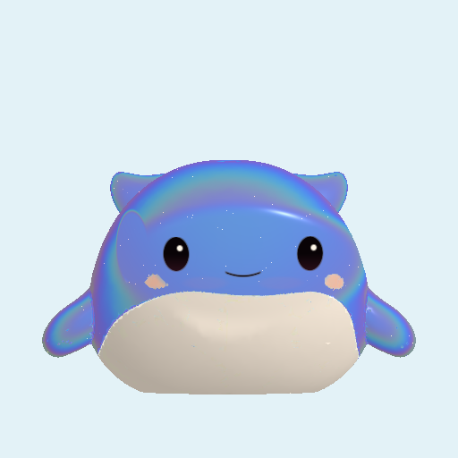
Deep Sea Glow · Ultra rareglow-jellyEight temperament expressions
Eyes, lids, gaze, mouth and blush use the same expression system as the other toys. Personality does not change material or color. The existing development face-cycle setting also applies to Wally.
SunnyGrumpyShyShow-off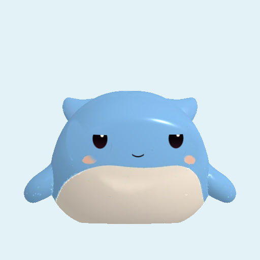
Dreamy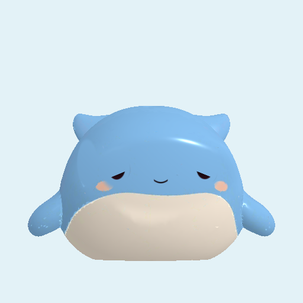
Sleepy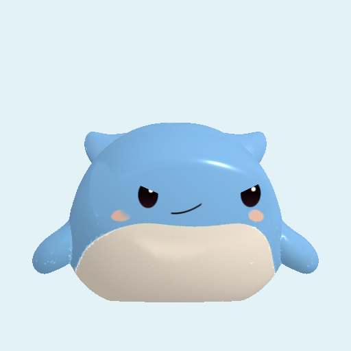
Mischief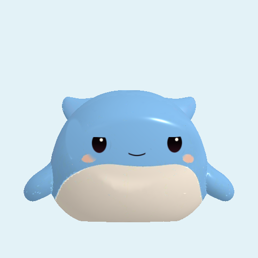
Calm